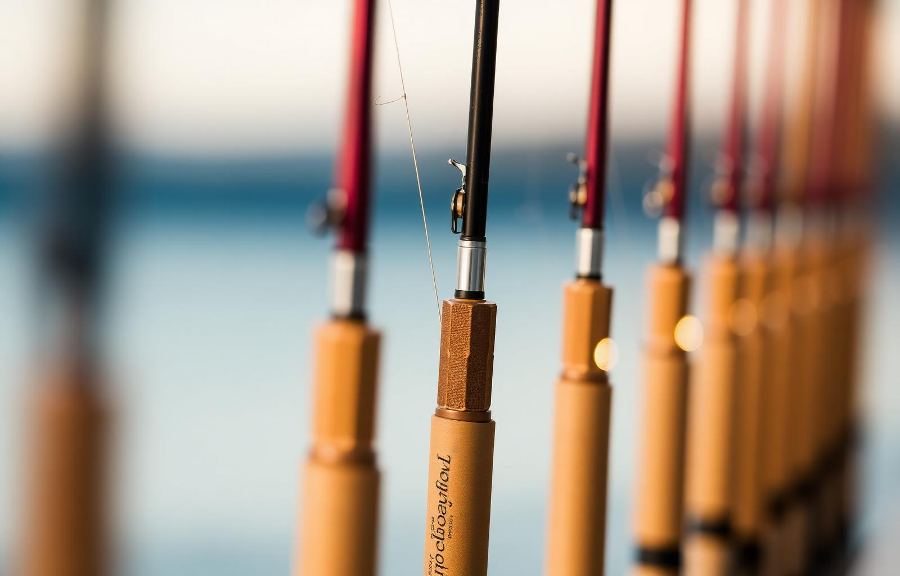

Curadoria especializada
Cada produto exposto passa pela nossa análise técnica. Buscamos linhas, anzóis, molinetes e iscas que realmente performam em águas brasileiras — do pesque-pague ao rio bravo da Amazônia.
Equipamentos, técnica e paixão pela pesca esportiva — tudo num só lugar.
ContinueA Via Pesca consolidou-se como referência regional para pescadores esportivos e amadores. Selecionamos cada vara, molinete e isca pensando em quem vive a pesca como esporte, lazer e estilo de vida — entregando produtos de qualidade comprovada e atendimento especializado.
Mais do que uma loja, somos um ponto de encontro para quem respeita as águas do nosso nordeste. "Pescaria de verdade" é a nossa filosofia, marca e compromisso com você.
Por que nos escolher?Eu, dono da Via Pesca, Ântonio Paulo, fundei a Via Pesca do sonho de oferecer aos pescadores brasileiros um espaço profissional, bem iluminado e organizado, onde cada equipamento ganha o destaque que merece. Cada mostruário de varas, até nossa prateleira de iscas, tudo faz nossa loja ser o que é desde 1992 — uma verdadeira exposição cuidadosa que mostra modelos para pesca leve, média e pesada, lado a lado.
Ao longo desses anos, construímos parcerias sólidas com as principais marcas nacionais e internacionais para que você encontre, em um só lugar, produtos de procedência, preço justo e a indicação certa para a sua próxima pescaria.
Embora muito tenha mudado, nossa essência continua a mesma — guiada por valores claros:
Cada produto exposto passa pela nossa análise técnica. Buscamos linhas, anzóis, molinetes e iscas que realmente performam em águas brasileiras — do pesque-pague ao rio bravo da Amazônia.
Nossa loja conta com um ambiente cheio de opções, profissional e bem iluminado, com exposição diferenciada de varas e grande variedade de equipamentos e acessórios nas prateleiras — projetada para receber o pescador como ele merece.
O sucesso da Via Pesca é fruto da reputação construída dia após dia desde 1992: atendimento honesto, conhecimento técnico e relacionamento próximo com quem entende — e com quem está começando agora.
Trabalhamos apenas com produtos de procedência, das marcas reconhecidas pelo mercado. Cada item passa por conferência rigorosa antes de chegar até a sua mão.
Do molinete básico ao carretilha de alta performance, das iscas mais simples aos modelos importados — montamos um mix completo para todos os perfis de pescador.
Acreditamos na pesca esportiva consciente. Apoiamos práticas de pesque-e-solte, equipamentos adequados e respeito ao meio ambiente aquático brasileiro.
Um universo completo para a sua pescaria, aqui está alguns dos nossos itens mais populares.

Qualidade — só trabalhamos com o que confiamos para a nossa própria pescaria.
Integridade — indicação honesta, mesmo que isso signifique vender menos.
Conhecimento — uma equipe que pesca, testa e entende.
Confiança — relação construída a longo prazo com cada cliente.
Parceria — do iniciante ao tournament angler, todos são bem recebidos.
Nosso time está pronto para te ajudar a montar o equipamento ideal para a sua próxima pescaria.
Seg a Sáb
07h ás 17h
Sáb de 07h ás 15h
Ambiente amplo e
profissional para você